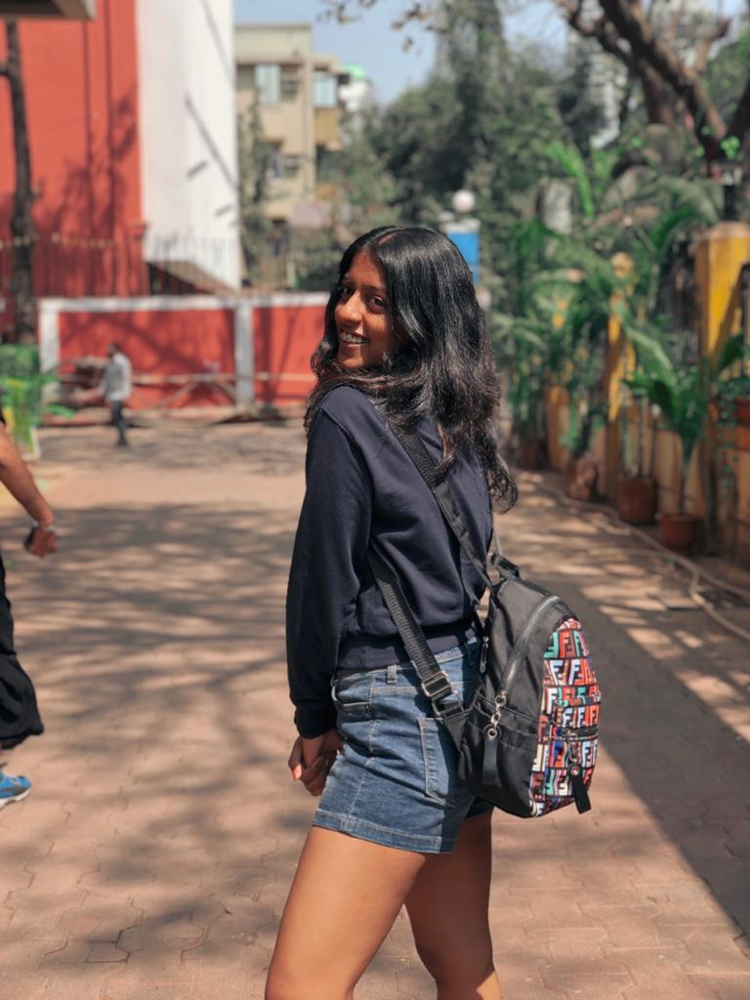

About Me

Hard-working, honest, loyal university second-year student with a positive demeanor and a plethora of skill and experience at Fr. Conceicao Rodrigues College of Engineering major Computer Science. There's no particular hobby taht I'm inclined towards because everyday is a new learning experience and hence you never know what cathes your attention next.